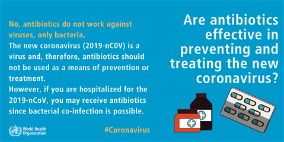
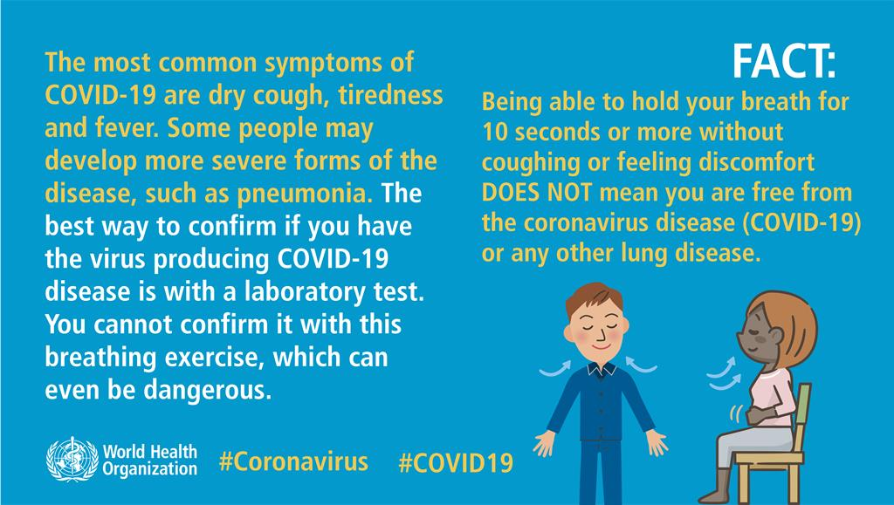
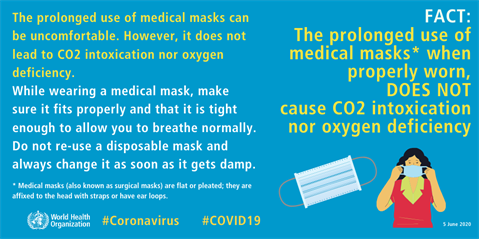
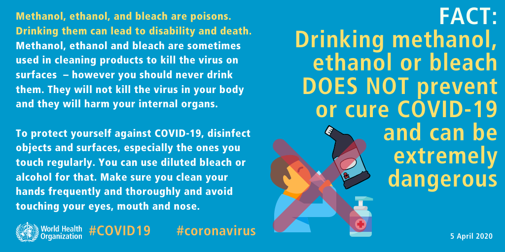
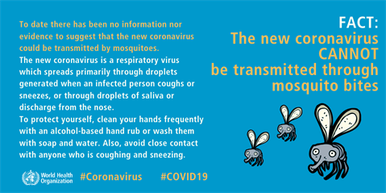
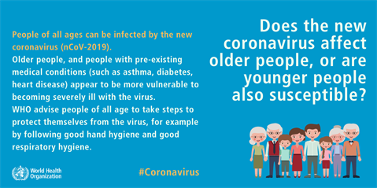
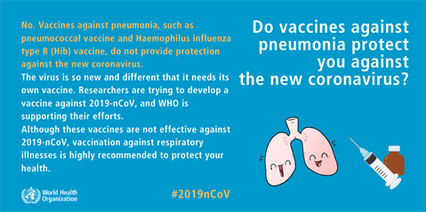
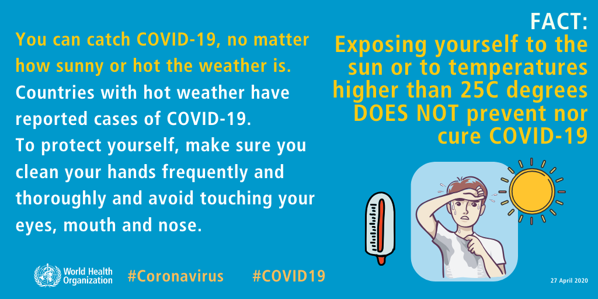
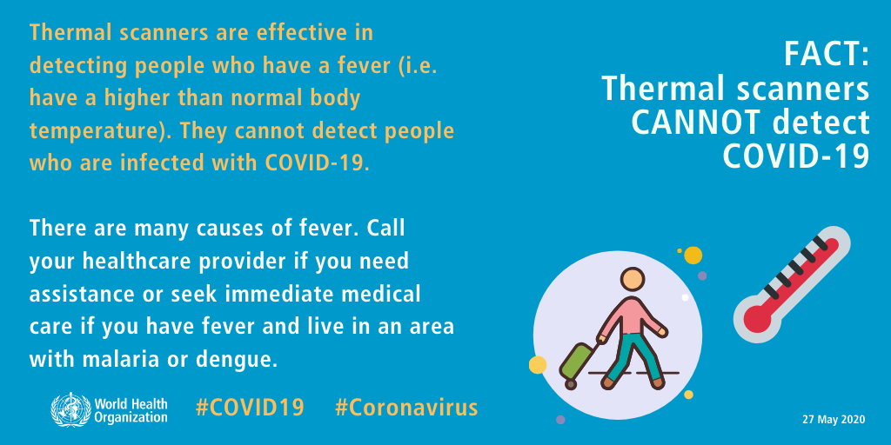
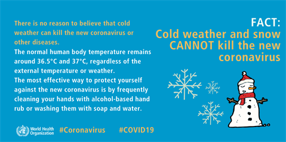

1. FACT: Antibiotics CANNOT prevent or treat COVID-19
Antibiotics work only against bacteria, not viruses.
COVID-19 is caused by a virus, and therefore antibiotics should not be used for prevention or treatment.
However, if you are hospitalized for COVID-19, you may receive antibiotics because bacterial
co-infection is possible.

2. FACT: Being able to hold your breath for 10 seconds or more without coughing or feeling
discomfort DOES NOT mean you are free from COVID-19
The most common symptoms of COVID-19 are dry cough, tiredness and fever. Some people may
develop more severe forms of the disease, such as pneumonia. The best way to confirm if you have
the virus producing COVID-19 disease is with a laboratory test. You cannot confirm it with this
breathing exercise, which can even be dangerous.

3. FACT: The prolonged use of medical masks* when properly worn, DOES NOT
cause CO2 intoxication nor oxygen deficiency
The prolonged use of medical masks can be uncomfortable. However, it does not lead to CO2
intoxication nor oxygen deficiency. While wearing a medical mask, make sure it fits properly and
that it is tight enough to allow you to breathe normally. Do not re-use a disposable mask and always
change it as soon as it gets damp.

4. FACT: Drinking methanol, ethanol or bleach DOES NOT prevent or
cure COVID-19 and can be extremely dangerous
Methanol, ethanol, and bleach are poisons. Drinking them can lead to disability and death.
Methanol, ethanol, and bleach are sometimes used in cleaning products to kill the virus on surfaces –
however you should never drink them. They will not kill the virus in your body and they will harm your
internal organs.

5. FACT: The COVID-19 virus CANNOT be spread through mosquito bites
To date there has been no information nor evidence to suggest that the new coronavirus could be
transmitted by mosquitoes. The new coronavirus is a respiratory virus which spreads primarily through
droplets generated when an infected person coughs or sneezes, or through droplets of saliva or discharge
from the nose. To protect yourself, clean your hands frequently with an alcohol-based hand rub or wash
them with soap and water. Also, avoid close contact with anyone who is coughing and sneezing

6. FACT: People of all ages can be infected by the COVID-19 virus
Older people and younger people can be infected by the COVID-19 virus. Older people, and people with pre-existing medical conditions such as asthma, diabetes, and heart disease appear to be more vulnerable to becoming severely ill with the virus.
WHO advises people of all ages to take steps to protect themselves from the virus, for example by
following good hand hygiene and good respiratory hygiene.

7. FACT: Vaccines against pneumonia DO NOT protect against the COVID-19 virus
Vaccines against pneumonia, such as pneumococcal vaccine and Haemophilus influenza type B (Hib) vaccine, do not provide protection against the new coronavirus.
The virus is so new and different that it needs its own vaccine. Researchers are trying to develop a vaccine against COVID-19, and WHO is supporting their efforts.
Although these vaccines are not effective against COVID-19, vaccination against respiratory illnesses is highly recommended to protect your health.

8. FACT: Exposing yourself to the sun or temperatures higher than 25°C DOES NOT protect you from COVID-19
You can catch COVID-19, no matter how sunny or hot the weather is. Countries with hot weather have reported cases of COVID-19. To protect yourself, make sure you clean your hands frequently and thoroughly and avoid touching your eyes, mouth, and nose.

9. FACT: Thermal scanners CANNOT detect COVID-19
Thermal scanners are effective in detecting people who have a fever (i.e. have a higher than normal body temperature). They cannot detect people who are infected with COVID-19. There are many causes of fever. Call your healthcare provider if you need assistance or seek immediate medical care if you have fever and live in an area with malaria or dengue.

10. FACT: Cold weather and snow CANNOT kill the COVID-19 virus
There is no reason to believe that cold weather can kill the new coronavirus or other diseases.
The normal human body temperature remains around 36.5°C to 37°C, regardless of the external temperature
or weather. The most effective way to protect yourself against the new coronavirus is by frequently
cleaning your hands with alcohol-based hand rub or washing them with soap and water.
